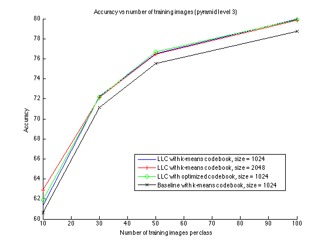
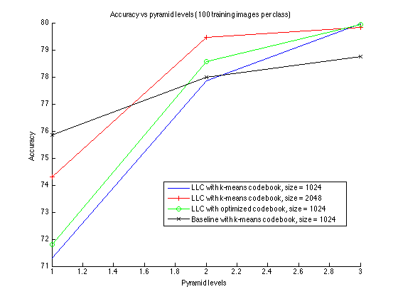

|
Table of contents
|
Extensions
Analysis of results
From the output of the grid search, we generated curves comparing the accuracy of four methods:
- LLC with k-means codebook of size1024
- LLC with k-means codebook of size 2048
- LLC with codebook optimization of size 1024
- Baseline with k-means codebook of size 1024
The figure below depicts curves for Accuracy vs number of training images per class:

As expected, accuracy increases monotonically with the increase in number of training images per class. All three LLC approaches perform very similarly and better than the baseline.
The figure below depicts curves for Accuracy vs pyramid levels:

All approaches perform well even at the lowest pyramid level (greater than 70% accuracy), indicating that the number of training images plays a more important role than the pyramid levels. The performances of different LLC approaches are similar for pyramid level 3, but diverge for the lower pyramid levels. The optimized codebook performs better than the unoptimized codebook of the same size, but the codebook of size 2048 performs better than both. The baseline approach outperforms the LLC approaches at the lowest pyramid level.
|